Git保姆级教程
Git简介
Git 是一种分布式版本控制系统，它可以不受网络连接的限制，加上其它众多优点，目前已经成为程序开发人员做项目版本管理时的首选，非开发人员也可以用 Git 来做自己的文档版本管理工具。
大概是大二的时候开始接触和使用Git，从一开始的零接触到现在的重度依赖，真是感叹 Git 的强大。
Git 的api很多，但其实平时项目中90%的需求都只需要用到几个基本的功能即可，所以本文将从 实用主义 和 深入探索 2个方面去谈谈如何在项目中使用 Git，一般来说，看完 实用主义 这一节就可以开始在项目中动手用。
实用主义
进入 Git官网 下载合适你的安装包，安装好 Git 后，打开命令行工具，进入工作文件夹（为了便于理解我们在系统桌面上演示），创建一个新的demo文件夹。 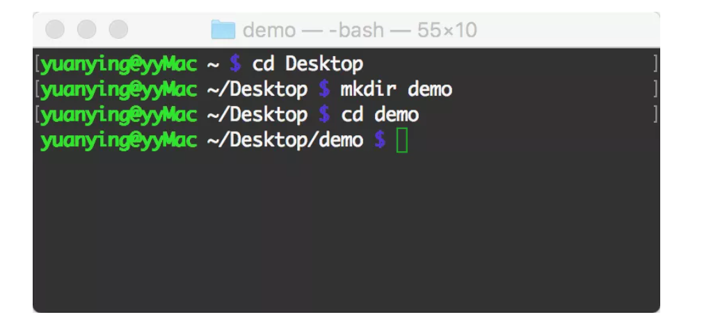 进入 Github网站 注册一个账号并登录，进入 我的博客，点击 Clone or download，再点击 Use HTTPS ，复制项目地址 https://github.com/gafish/gafish.github.com.git 备用。 再回到命令行工具，一切就绪，接下来进入本文的重点。
常用操作
所谓实用主义，就是掌握了以下知识就可以玩转 Git，轻松应对90%以上的需求。以下是实用主义型的Git命令列表，先大致看一下
- git clone
- git config
- git branch
- git checkout
- git status
- git add
- git commit
- git push
- git pull
- git log
- git tag
git clone
从git服务器拉取代码
git clone https://github.com/gafish/gafish.github.com.git
代码下载完成后在当前文件夹中会有一个 gafish.github.com 的目录，通过 cd gafish.github.com 命令进入目录。
git config
配置开发者用户名和邮箱
git config user.name gafish
git config user.email gafish@test.com
每次代码提交的时候都会生成一条提交记录，其中会包含当前配置的用户名和邮箱。
git branch
创建、重命名、查看、删除项目分支，通过 Git 做项目开发时，一般都是在开发分支中进行，开发完成后合并分支到主干。
git branch daily/0.0.0
创建一个名为 daily/0.0.0 的日常开发分支，分支名只要不包括特殊字符即可。
git branch -m daily/0.0.0 daily/0.0.1
如果觉得之前的分支名不合适，可以为新建的分支重命名，重命名分支名为 daily/0.0.1
git branch
通过不带参数的branch命令可以查看当前项目分支列表
git branch -d daily/0.0.1
如果分支已经完成使命则可以通过 -d 参数将分支删除，这里为了继续下一步操作，暂不执行删除操作
git checkout
切换分支
git checkout daily/0.0.1
切换到 daily/0.0.1 分支，后续的操作将在这个分支上进行
git status
查看文件变动状态 通过任何你喜欢的编辑器对项目中的 README.md 文件做一些改动，保存。
git status
通过 git status 命令可以看到文件当前状态 Changes not staged for commit:（改动文件未提交到暂存区）
On branch daily/0.0.1
Changes not staged for commit:
(use "git add <file>..." to update what will be committed)
(use "git checkout -- <file>..." to discard changes in working directory)
modified: README.md
no changes added to commit (use "git add" and/or "git commit -a")
git add
添加文件变动到暂存区
git add README.md
通过指定文件名 README.md 可以将该文件添加到暂存区，如果想添加所有文件可用 git add . 命令，这时候可通过 git status 看到文件当前状态 Changes to be committed: （文件已提交到暂存区）
On branch daily/0.0.1
Changes to be committed:
(use "git reset HEAD <file>..." to unstage)
modified: README.md
git commit
提交文件变动到版本库
git commit -m '这里写提交原因'
通过 -m 参数可直接在命令行里输入提交描述文本
git push
将本地的代码改动推送到服务器
git push origin daily/0.0.1
origin 指代的是当前的git服务器地址，这行命令的意思是把 daily/0.0.1 分支推送到服务器，当看到命令行返回如下字符表示推送成功了。
Counting objects: 3, done.
Delta compression using up to 8 threads.
Compressing objects: 100% (2/2), done.
Writing objects: 100% (3/3), 267 bytes | 0 bytes/s, done.
Total 3 (delta 1), reused 0 (delta 0)
remote: Resolving deltas: 100% (1/1), completed with 1 local objects.
To https://github.com/gafish/gafish.github.com.git
* [new branch] daily/0.0.1 -> daily/0.0.1
现在我们回到Github网站的项目首页，点击 Branch:master 下拉按钮，就会看到刚才推送的 daily/00.1 分支了
git pull
将服务器上的最新代码拉取到本地
git pull origin daily/0.0.1
如果其它项目成员对项目做了改动并推送到服务器，我们需要将最新的改动更新到本地，这里我们来模拟一下这种情况。
进入Github网站的项目首页，再进入 daily/0.0.1 分支，在线对 README.md 文件做一些修改并保存，然后在命令中执行以上命令，它将把刚才在线修改的部分拉取到本地，用编辑器打开 README.md ，你会发现文件已经跟线上的内容同步了。
如果线上代码做了变动，而你本地的代码也有变动，拉取的代码就有可能会跟你本地的改动冲突，一般情况下 Git 会自动处理这种冲突合并，但如果改动的是同一行，那就需要手动来合并代码，编辑文件，保存最新的改动，再通过 git add .和 git commit -m 'xxx' 来提交合并。
git log
查看版本提交记录
git log
通过以上命令，我们可以查看整个项目的版本提交记录，它里面包含了提交人、日期、提交原因等信息，得到的结果如下：
commit c334730f8dba5096c54c8ac04fdc2b31ede7107a
Author: gafish <gafish@qqqq.com>
Date: Wed Jan 11 09:44:13 2017 +0800
Update README.md
commit ba6e3d21fcb1c87a718d2a73cdd11261eb672b2a
Author: gafish <gafish@qqqq.com>
Date: Wed Jan 11 09:31:33 2017 +0800
test
.....
提交记录可能会非常多，按 J 键往下翻，按 K 键往上翻，按 Q 键退出查看
git tag
为项目标记里程碑
git tag publish/0.0.1
git push origin publish/0.0.1
当我们完成某个功能需求准备发布上线时，应该将此次完整的项目代码做个标记，并将这个标记好的版本发布到线上，这里我们以 publish/0.0.1 为标记名并发布，当看到命令行返回如下内容则表示发布成功了
Total 0 (delta 0), reused 0 (delta 0)
To https://github.com/gafish/gafish.github.com.git
* [new tag] publish/0.0.1 -> publish/0.0.1
.gitignore
设置哪些内容不需要推送到服务器，这是一个配置文件
touch .gitignore
.gitignore 不是 Git 命令，而在项目中的一个文件，通过设置 .gitignore 的内容告诉 Git 哪些文件应该被忽略不需要推送到服务器，通过以上命令可以创建一个 .gitignore 文件，并在编辑器中打开文件，每一行代表一个要忽略的文件或目录，如：
demo.html
build/
以上内容的意思是 Git 将忽略 demo.html 文件 和 build/ 目录，这些内容不会被推送到服务器上
小结
通过掌握以上这些基本命令就可以在项目中开始用起来了，如果追求实用，那关于 Git 的学习就可以到此结束了，偶尔遇到的问题也基本上通过 Google 也能找到答案，如果想深入探索 Git 的高阶功能，那就继续往下看 深入探索 部分。
深入探索
基本概念
工作区（Working Directory）
就是你在电脑里能看到的目录，比如上文中的 gafish.github.com 文件夹就是一个工作区 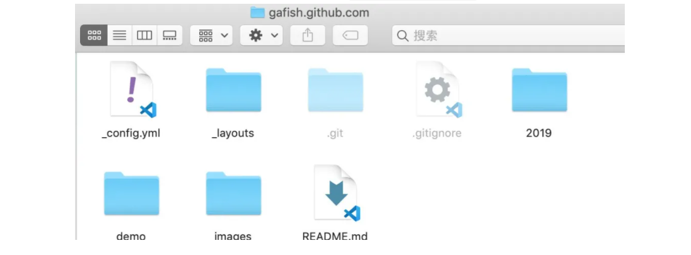
本地版本库（Local Repository）
工作区有一个隐藏目录 .git，这个不算工作区，而是 Git 的版本库。 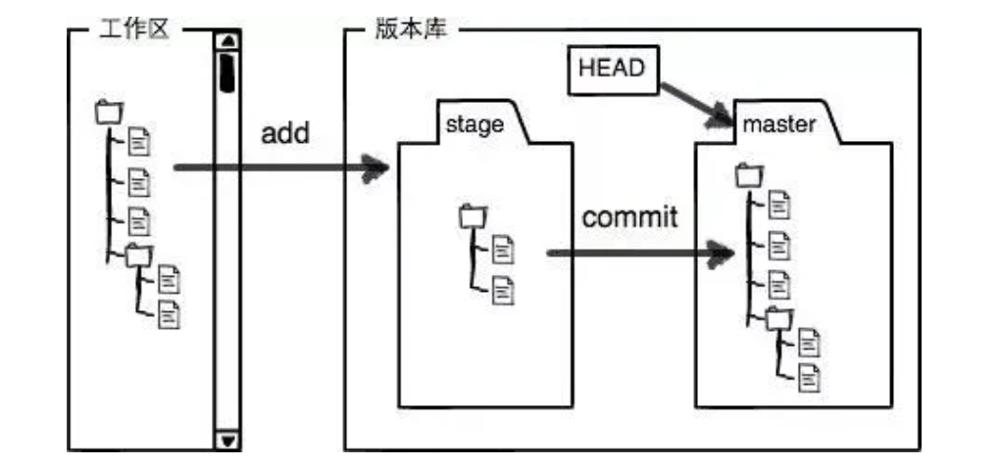
暂存区（stage）
本地版本库里存了很多东西，其中最重要的就是称为 stage（或者叫index）的暂存区，还有 Git 为我们自动创建的第一个分支 master，以及指向 master 的一个指针叫 HEAD。
远程版本库（Remote Repository）
一般指的是 Git 服务器上所对应的仓库，本文的示例所在的github仓库就是一个远程版本库 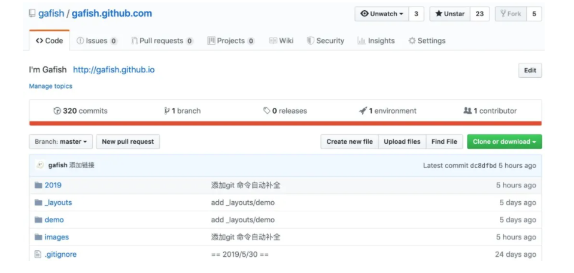
以上概念之间的关系
工作区、暂存区、本地版本库、远程版本库之间几个常用的 Git 操作流程如下图所示： 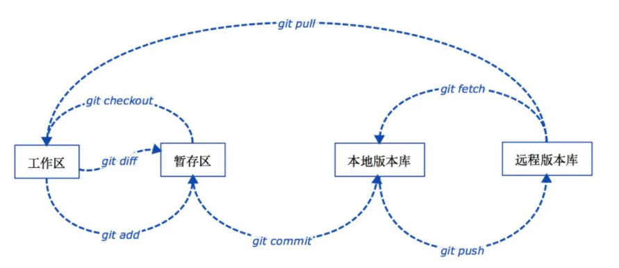
分支（Branch）
分支是为了将修改记录的整个流程分开存储，让分开的分支不受其它分支的影响，所以在同一个数据库里可以同时进行多个不同的修改 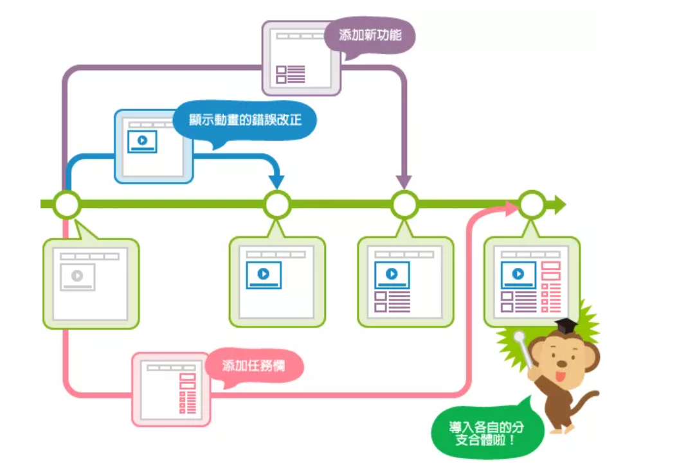
主分支（Master）
前面提到过 master 是 Git 为我们自动创建的第一个分支，也叫主分支，其它分支开发完成后都要合并到 master 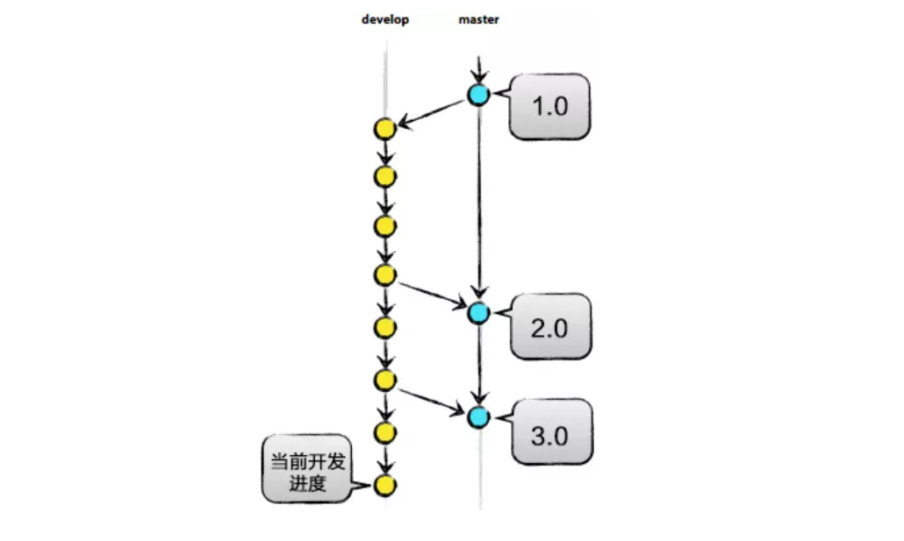
标签（Tag）
标签是用于标记特定的点或提交的历史，通常会用来标记发布版本的名称或版本号（如：publish/0.0.1），虽然标签看起来有点像分支，但打上标签的提交是固定的，不能随意的改动，参见上图中的1.0 / 2.0 / 3.0
HEAD
HEAD 指向的就是当前分支的最新提交 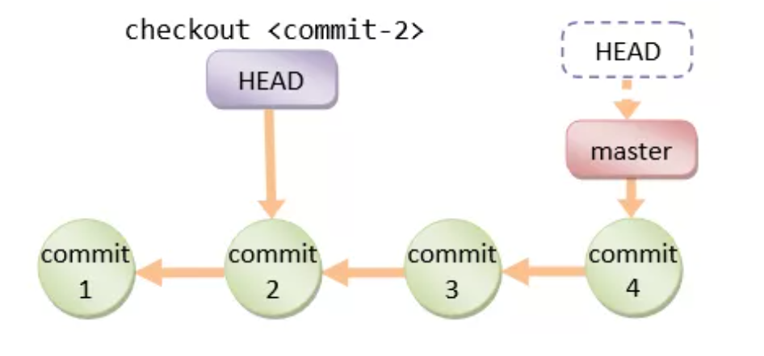
以上概念了解的差不多，那就可以继续往下看，下面将以具体的操作类型来讲解 Git 的高阶用法
操作文件
git add
添加文件到暂存区
git add -i
通过此命令将打开交互式子命令系统，你将看到如下子命令
***Commands***
1: status 2: update 3: revert 4: add untracked
5: patch 6: diff 7: quit 8: help
通过输入序列号或首字母可以选择相应的功能，具体的功能解释如下：
- status：功能上和 git add -i 相似，没什么鸟用
- update：详见下方 git add -u
- revert：把已经添加到暂存区的文件从暂存区剔除，其操作方式和 update类似
- add untracked：可以把新增的文件添加到暂存区，其操作方式和 update 类似
- patch：详见下方 git add -p
- diff：比较暂存区文件和本地版本库的差异，其操作方式和 update 类似
- quit：退出 git add -i 命令系统
- help：查看帮助信息
直接进入交互命令中最有用的 patch 模式git add -p
这是交互命令中最有用的模式，其操作方式和 update 类似，选择后 Git 会显示这些文件的当前内容与本地版本库中的差异，然后您可以自己决定是否添加这些修改到暂存区，在命令行 Stage deletion [y,n,q,a,d,/,?]? 后输入 y,n,q,a,d,/,? 其中一项选择操作方式，具体功能解释如下：
- y：接受修改
- n：忽略修改
- q：退出当前命令
- a：添加修改
- d：放弃修改
- /：通过正则表达式匹配修改内容
- ?：查看帮助信息
直接进入交互命令中的 update 模式git add -u
它会先列出工作区 修改 或 删除 的文件列表，新增 的文件不会被显示，在命令行 Update>> 后输入相应的列表序列号表示选中该项，回车继续选择，如果已选好，直接回车回到命令主界面
git add --ignore-removal .
添加工作区 修改 或 新增 的文件列表， 删除 的文件不会被添加
git commit
把暂存区的文件提交到本地版本库
git commit -m '第一行提交原因' -m '第二行提交原因'
不打开编辑器，直接在命令行中输入多行提交原因
git commit -am '提交原因'
将工作区 修改 或 删除 的文件提交到本地版本库， 新增 的文件不会被提交
git commit --amend -m '提交原因'
修改最新一条提交记录的提交原因
git commit -C HEAD
将当前文件改动提交到 HEAD 或当前分支的历史ID
git mv
移动或重命名文件、目录
git mv a.md b.md -f
将 a.md 重命名为 b.md ，同时添加变动到暂存区，加 -f 参数可以强制重命名，相比用 mv a.md b.md 命令省去了 git add 操作
git rm
从工作区和暂存区移除文件
git rm b.md
从工作区和暂存区移除文件 b.md ，同时添加变动到暂存区，相比用 rm b.md 命令省去了 git add 操作
git rm src/ -r
允许从工作区和暂存区移除目录
git status
git status -s
以简短方式查看工作区和暂存区文件状态，示例如下：
M demo.html
?? test.html
git status --ignored //查看工作区和暂存区文件状态，包括被忽略的文件
操作分支
git branch
查看、创建、删除分支
git branch -a
查看本地版本库和远程版本库上的分支列表
git branch -r
查看远程版本库上的分支列表，加上 -d 参数可以删除远程版本库上的分支
git branch -D
分支未提交到本地版本库前强制删除分支
git branch -vv
查看带有最后提交id、最近提交原因等信息的本地版本库分支列表 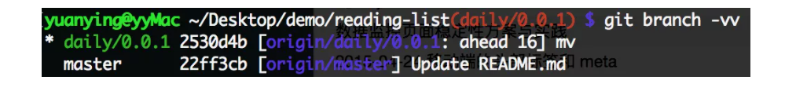
git merge
将其它分支合并到当前分支
git merge --squash
将待合并分支上的 commit 合并成一个新的 commit 放入当前分支，适用于待合并分支的提交记录不需要保留的情况
git merge --no-ff
默认情况下，Git 执行"快进式合并"（fast-farward merge），会直接将 Master分支指向 Develop 分支，使用 --no-ff 参数后，会执行正常合并，在 Master分支上生成一个新节点，保证版本演进更清晰。 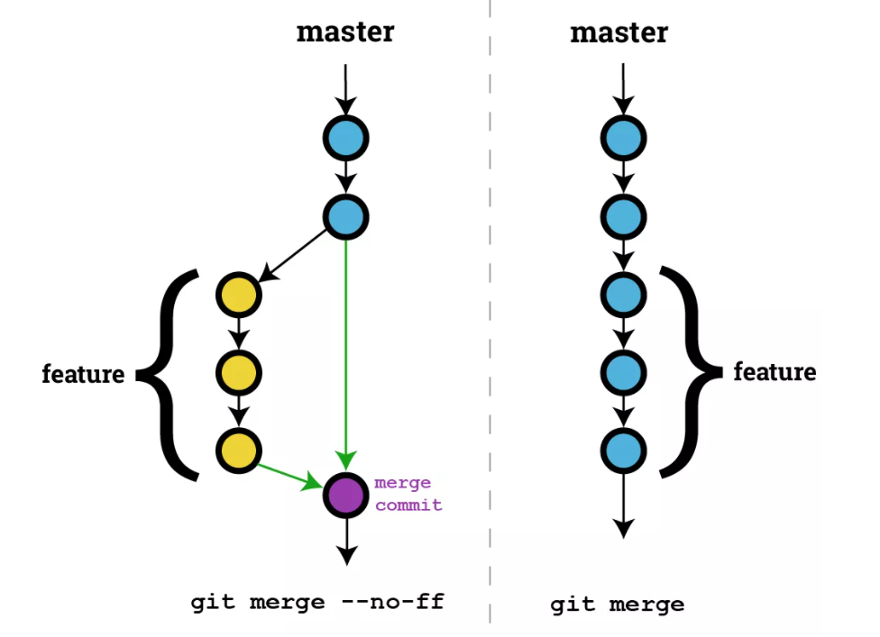
git merge --no-edit
在没有冲突的情况下合并，不想手动编辑提交原因，而是用 Git 自动生成的类似 Merge branch 'test' 的文字直接提交
git checkout
切换分支
git checkout -b daily/0.0.1
创建 daily/0.0.1 分支，同时切换到这个新创建的分支
git checkout HEAD demo.html
从本地版本库的 HEAD（也可以是提交ID、分支名、Tag名） 历史中检出 demo.html 覆盖当前工作区的文件，如果省略 HEAD 则是从暂存区检出
git checkout --orphan new_branch
这个命令会创建一个全新的，完全没有历史记录的新分支，但当前源分支上所有的最新文件都还在，真是强迫症患者的福音，但这个新分支必须做一次 git commit操作后才会真正成为一个新分支。
git checkout -p other_branch
这个命令主要用来比较两个分支间的差异内容，并提供交互式的界面来选择进一步的操作，这个命令不仅可以比较两个分支间的差异，还可以比较单个文件的差异。
git stash
在 Git 的栈中保存当前修改或删除的工作进度，当你在一个分支里做某项功能开发时，接到通知把昨天已经测试完没问题的代码发布到线上，但这时你已经在这个分支里加入了其它未提交的代码，这个时候就可以把这些未提交的代码存到栈里。
git stash
将未提交的文件保存到Git栈中
git stash list
查看栈中保存的列表
git stash show stash@{0}
显示栈中其中一条记录
git stash drop stash@{0}
移除栈中其中一条记录
git stash pop
从Git栈中检出最新保存的一条记录，并将它从栈中移除
git stash apply stash@{0}
从Git栈中检出其中一条记录，但不从栈中移除
git stash branch new_banch
把当前栈中最近一次记录检出并创建一个新分支
git stash clear
清空栈里的所有记录
git stash create
为当前修改或删除的文件创建一个自定义的栈并返回一个ID，此时并未真正存储到栈里
git stash store xxxxxx
将 create 方法里返回的ID放到 store 后面，此时在栈里真正创建了一个记录，但当前修改或删除的文件并未从工作区移除
$ git stash create
09eb9a97ad632d0825be1ece361936d1d0bdb5c7
$ git stash store 09eb9a97ad632d0825be1ece361936d1d0bdb5c7
$ git stash list
stash@{0}: Created via "git stash store".
操作历史
git log
显示提交历史记录
git log -p
显示带提交差异对比的历史记录
git log demo.html
显示 demo.html 文件的历史记录
git log --since="2 weeks ago"
显示2周前开始到现在的历史记录，其它时间可以类推
git log --before="2 weeks ago"
显示截止到2周前的历史记录，其它时间可以类推
git log -10
显示最近10条历史记录
git log f5f630a..HEAD
显示从提交ID f5f630a 到 HEAD 之间的记录，HEAD 可以为空或其它提交ID
git log --pretty=oneline
在一行中输出简短的历史记录
git log --pretty=format:"%h"
格式化输出历史记录
Git 用各种 placeholder 来决定各种显示内容，我挑几个常用的显示如下：
- %H: commit hash
- %h: 缩短的commit hash
- %T: tree hash
- %t: 缩短的 tree hash
- %P: parent hashes
- %p: 缩短的 parent hashes
- %an: 作者名字
- %aN: mailmap的作者名
- %ae: 作者邮箱
- %ad: 日期 (--date= 制定的格式)
- %ar: 日期, 相对格式(1 day ago)
- %cn: 提交者名字
- %ce: 提交者 email
- %cd: 提交日期 (--date= 制定的格式)
- %cr: 提交日期, 相对格式(1 day ago)
- %d: ref名称
- %s: commit信息标题
- %b: commit信息内容
- %n: 换行
git cherry-pick
合并分支的一条或几条提交记录到当前分支末梢
git cherry-pick 170a305
合并提交ID 170a305 到当前分支末梢
git reset
将当前的分支重设（reset）到指定的
git reset --mixed <commit>
--mixed 是不带参数时的默认参数，它退回到某个版本，保留文件内容，回退提交历史
git reset --soft <commit>
暂存区和工作区中的内容不作任何改变，仅仅把 HEAD 指向
git reset --hard <commit>
自从
git rebase
重新定义分支的版本库状态
git rebase branch_name
合并分支，这跟 merge 很像，但还是有本质区别，看下图： 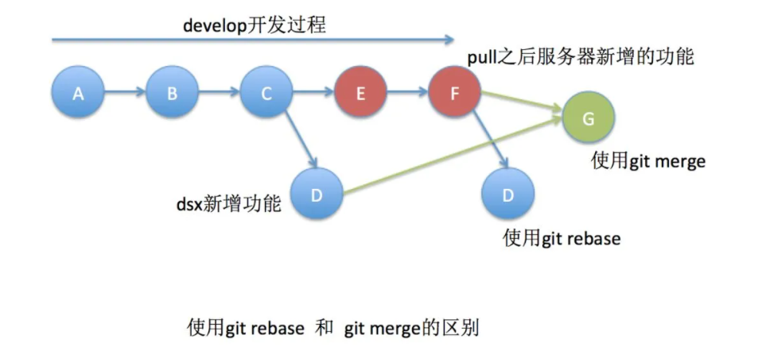 合并过程中可能需要先解决冲突，然后执行 git rebase --continue
git rebase -i HEAD~~
打开文本编辑器，将看到从 HEAD 到 HEAD~~ 的提交如下
pick 9a54fd4 添加commit的说明
pick 0d4a808 添加pull的说明
# Rebase 326fc9f..0d4a808 onto d286baa
#
# Commands:
# p, pick = use commit
# r, reword = use commit, but edit the commit message
# e, edit = use commit, but stop for amending
# s, squash = use commit, but meld into previous commit
# f, fixup = like "squash", but discard this commit's log message
# x, exec = run command (the rest of the line) using shell
将第一行的 pick 改成 Commands 中所列出来的命令，然后保存并退出，所对应的修改将会生效。如果移动提交记录的顺序，将改变历史记录中的排序。
git revert
撤销某次操作，此次操作之前和之后的 commit 和 history 都会保留，并且把这次撤销作为一次最新的提交
git revert HEAD
撤销前一次提交操作
git revert HEAD --no-edit
撤销前一次提交操作，并以默认的 Revert "xxx" 为提交原因
git revert -n HEAD
需要撤销多次操作的时候加 -n 参数，这样不会每次撤销操作都提交，而是等所有撤销都完成后一起提交
git diff
查看工作区、暂存区、本地版本库之间的文件差异，用一张图来解释 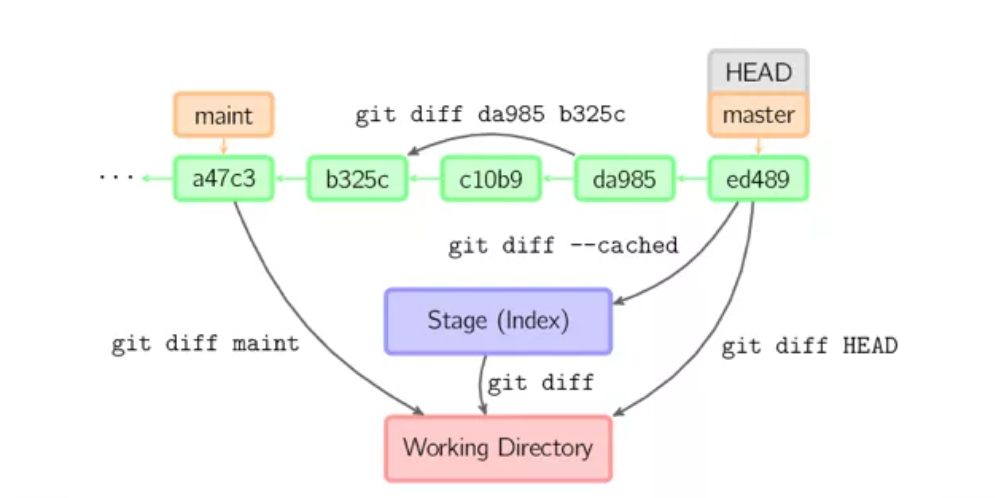
git diff --stat
通过 --stat 参数可以查看变更统计数据
test.md | 1 -
1 file changed, 1 deletion(-)
git reflog
reflog 可以查看所有分支的所有操作记录（包括commit和reset的操作、已经被删除的commit记录，跟 git log 的区别在于它不能查看已经删除了的commit记录 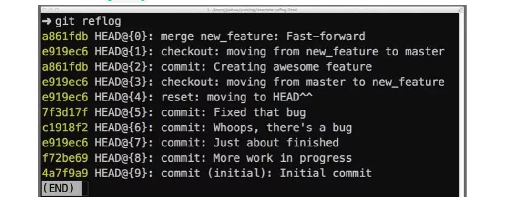
远程版本库连接
如果在GitHub项目初始化之前，文件已经存在于本地目录中，那可以在本地初始化本地版本库，再将本地版本库跟远程版本库连接起来
git init
在本地目录内部会生成.git文件夹
git remote
git remote -v
不带参数，列出已经存在的远程分支，加上 -v 列出详细信息，在每一个名字后面列出其远程url
git remote add origin https://github.com/gafish/gafish.github.com.git
添加一个新的远程仓库，指定一个名字，以便引用后面带的URL
git fetch
将远程版本库的更新取回到本地版本库
git fetch origin daily/0.0.1
默认情况下，git fetch 取回所有分支的更新。如果只想取回特定分支的更新，可以指定分支名。
问题排查
git blame
查看文件每行代码块的历史信息
git blame -L 1,10 demo.html
截取 demo.html 文件1-10行历史信息
git bisect
二分查找历史记录，排查BUG
git bisect start
开始二分查找
git bisect bad
标记当前二分提交ID为有问题的点
git bisect good
标记当前二分提交ID为没问题的点
git bisect reset
查到有问题的提交ID后回到原分支
更多操作
git submodule
通过 Git 子模块可以跟踪外部版本库，它允许在某一版本库中再存储另一版本库，并且能够保持2个版本库完全独立
git submodule add https://github.com/gafish/demo.git demo
将 demo 仓库添加为子模块
git submodule update demo
更新子模块 demo
git gc
运行Git的垃圾回收功能，清理冗余的历史快照
git archive
将加了tag的某个版本打包提取
git archive -v --format=zip v0.1 > v0.1.zip
--format 表示打包的格式，如 zip，-v 表示对应的tag名，后面跟的是tag名，如 v0.1。